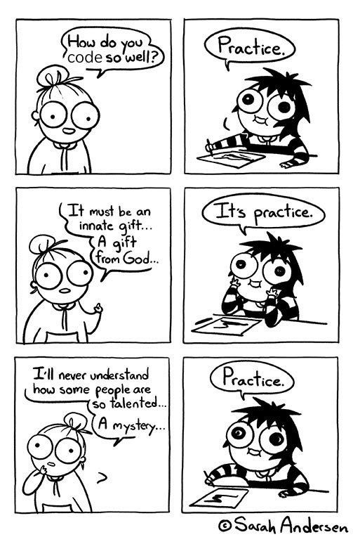
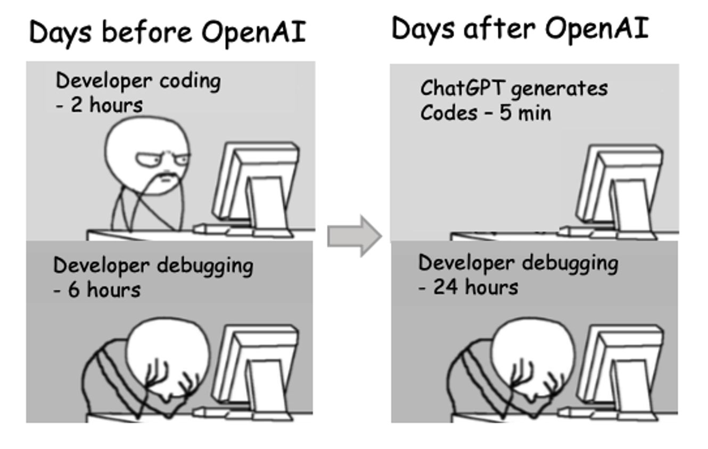

OPS 445: Open System Automation
Eric Brauer
Summer 2024
Overview
- Introduction and Learning Outcomes
- Course Evaluation and Promotion Policy
- Format of the Course: Online Lectures and Tutorials
- Lab Submission and Quizzes
- Assignments
- Tests
- Course Policies: Academic Integrity, Missing Quizzes, etc.
Introduction
This
is an introductory programming course designed specifically for system
and network administrators.
Students
will learn generally-applicable programming concepts and techniques
using the Python programming language.
Following
an introduction to fundamental programming principles the students will
write software to automate deployment and configuration tasks over a
network.
Learning Outcomes
- Design algorithms to solve simple problems which require
input/output, conditions, and loops.
- Design and implement functions in order to avoid code duplication,
while avoiding the use of global variables.
- Read and write data from/to plain-text and binary files.
- Write code that handles expected and unexpectederrors during
execution.
- Use a programming languagedebugger to speed up locating errors in
the code.
Learning Outcomes II
- Apply knowledge of established and new development tools to write
deployable code efficiently.
- Automate deployment and configuration tasks using a scripting
language with a configuration management tool.
- Assess, select, and use appropriate tools and techniques to develop
and maintain administrative scripts and task automation.
- Provide clear and accurate documentation and comments in the source
code.
Course Evaluation
Labs and quizzes: 20%
Labs(8): 10%
Quizzes (4): 10%
Assignments (2): 30%
Midterm Assessment: 20%
Final Assessment: 30%
Tutorial
It’s a good time to be working on labs and assignments. I will
present examples/walkthroughs, and practice questions that will aid you
in understanding lab/assignment concepts. Afterwards will be lab time.
If you are working on labs during this time, you can get help from me
very quickly.
Online Lectures
The objective of online video lectures is to accommodate people who
may be taking the course in different time-zones. Videos give students
the most flexibility while still delivering the same content. The video
lectures will cover concepts from the lab in a more comprehensive
format. (That is, we take a look at the overall concept rather than
rehashing individual bits of code). Prepare for the class by
reading/reviewing assigned readings, which include text, lab
instruction, and slides before class.
Assigned Readings
There are two books for this course:
Electronic copies of both can be accessed on Blackboard and available
online as well.
Check the weekly schedule to find out the chapters from each book as
assigned reading. Reading those chapters before each week’s lecture will
help you understand the lectures and to complete the labs.
Lab Environment Setup
- Requirement for the course: a Linux development environment with git
and Python 3.11.
- I recommend creating a VM where you can install a code editor like
VS Code.
- Instructions can be found on the Wiki.
GitHub Setup
- Create a GitHub account
- Generate a public/private keypair for each computer you
will use for labs
- Copy your public key and paste it into your GitHub:
- Click on profile -> Settings -> GPG & SSH Keys
Lab Submission
- Click on the lab from Blackboard, and accept it.
- Clone the repository to your computer using SSH:
- Copy to your clipboard
Lab Submission
- Run
git clone from your terminal and paste the link
from GitHub.
- Follow Wiki instructions to create your files.
- Run the Lab Check script for each lab to make sure that you complete
all the required tasks.
- Labs are submitted on GitHub. Follow instructions to push your code
back into the repository.
Practical Quizzes
- The labs will also prepare you for the practical quizzes. These
quizzes can be considered “open book.” You may use class notes, and the
Python interpreter.
- However sharing answers is not permitted.
- Quizzes will be done online on GitHub Codespaces.
- Two types of questions may appear in each quizzes:
- Coding Questions: You will be asked to write or debug and fix a
script based on given details. You are allowed to use your VM to work
out the answer to this type of questions.
- Decoding Questions: You will be given a piece of Python code and you
have to figure out what it does. You will be asked a few questions to
test your understanding of the given piece of Python code. For example:
if you run the python code with a command line argument “ABCD”, what
will be the expected output?
- The exact date for each quizzes will be announced at least one week
before the scheduled date.
Assignments
- Assignments are based off concepts and lessons learned from the
lectures, the labs, and the weekly assigned reading.
- Don’t be afraid to ask your professor if you have any questions
about the assignments.
- There are two mandatory assignments, 15% each.
- Files will be provided over GitHub, and GitHub will be used for
evaluation.
- Assignments must use code that is within scope for the course
material. Code that is outside the scope of what you learned will
be given a grade of zero.
- I may ask you to undergo a code review. If you fail (or fail to
attend) code review, you will only be able to score a maximum of
50%.
Creating Backups!
- You are responsible for backing up your work in this class! This
includes your
- VM, and any lab work, python scripts, and assignments you’ve
completed.
- Fortunately, this is what GitHub is for.
- Commit your work after every significant change!!
Course Policies
- Getting Help/Asking Questions
- Late Policy
- Missed Tests/Quizzes Policy
- Academic Integrity Policy
- Information Technology Acceptable Use Policy
Asking Questions About The Course
Check These Introduction
Slides First!!
If your question is answered in these slides, I will not respond
to your email.
If
your question isn’t in these slides, please ask during class.
Asking Questions About An Assessment
- Quizzes are designed to check your comprehension, and are useful for
preparing for the big tests! I will always provide feedback.
- Check your codespace repository for a file called
result.txt OR check on Blackboard
I
DO NOT CHANGE QUIZ/TEST SCORES UNLESS THERE IS A PROBLEM WITH THE
MATH
If you believe there’s a problem with the score I gave you,
be prepared to demonstrate that your answer is
returning the correct result.
Unsolicited emails asking for marks without cause
will be ignored
Getting Help
Having problems? No
problem, that’s normal!
- Contact Me after lecture (email, MS Teams)
- Leave a question on the appropriate MS Teams channel
- Bring it up during tutorial! This would be a great time to explain
the concept!
Getting Help
When you ask your question, include:
- What you’re trying to do (not just “lab 3”)
- What result you’re expecting
- What result you’re getting (including error messages)
- What you’ve already tried to fix your problem.
Include your error message!
“How do I get better at programming?”

- learn by doing!
- Don’t just watch examples, copy them.
- Take an example, and modify it. See what happens.
- Later on, take a tedious/boring task and automate it.
- (Refer to Automate the Boring Stuff for ideas!)
Lab Marks
To receive full marks for labs, they must be completed and submitted
by their due dates as posted on Blackboard (excepting the first
two).
Your labs have a Check script.
- If all tests pass, you receive full marks.
- If 50% - 99% of tests pass, you get 50% of marks.
- If less than 50% of tests pass, the lab is not yet complete.
Late Labs
- Lab files can be submitted late for a maximum grade of 50%, but all
tests must pass.
- If late labs are not 100% complete, they will get 0.
- Late lab marks are updated after reading week, and at the end of
semester.
Late Assignments
Milestones
- On the deadline of a milestone, I will look at code that you’ve
committed on GitHub.
- If you didn’t commit any code, you get zero.
- On the next milestone, if you got caught up, you can get 50% of
marks for the late milestone.
Assignment Final Submissions
- To receive full marks for assignments, they must be completed and
submitted by their due dates as posted on the web site.
- Late assignments are subject to 10% late penalty per school day.
Milestones must be submitted on time.
- Both assignments must be completed satisfactory,
even if it is overdue and worth zero marks, to get the credit for this
course.
Quizzes
There are five quizzes this semester.
I will be dropping the lowest quiz mark.
The rest of the quizzes are worth 2.5%.
There are no makeups or second chances on quizzes, so don’t
bother emailing me.
If you miss one quiz, not to worry, it won’t affect your grade.
But you’ll have to be sure to write the next 4.
Missed Tests
If you are going to miss a scheduled test, Email me before
the assessment is scheduled to begin.
It doesn’t have to be a long email, just let me know what’s going
on.
Provide valid supporting documentation before alternative arrangement
will be considered. Tests will require a make-up.
Academic Integrity Policy
This college (and course) have a zero tolerance
policy towards plaigiarism, infringement of any kind. The code you
submit needs to be your own.
Please
refer to the following web page if you’re at all uncertain.
- Do not use or share completed code for labs, assignments, or
quizzes.
- If you want to share example to help a classmate, make sure that it
is not directly from a lab or assignment.
- Change what it does/how it works.
- Sharing a line of code if okay. Do not share your
files.
- If you are using Github, your repository must be
private.
Regarding LLMs Such As ChatGPT

Regarding LLMs
- LLMs are a fine resource for experienced devs, because we
can evaluate and troubleshoot the solutions that ChatGPT provides.
- Before you can evaluate and troubleshoot these solutions, you need
to practice solving easier problems.
- This course provides you with this practice, but the problems we
train you on are easily solved with LLMs. In my experience, practice
problems are the only types of problems that LLMs excel at.
(Real life is messy).
And So
I will ask that you not use ChatGPT or similar LLMs during
the course. Try to solve the problems with your debugger and brain.
The process is the point!
- LLM solutions are ineligible for points in the assignments and
tests. You will get zero.
- Code that is out of scope will be given a grade of zero.
- LLMs are not permitted in technical job interviews. If you can’t do
it honestly, you will lose opportunities.
- Sharing proprietary code with ChatGPT will
get you fired.
- Relying on ChatGPT means you will always be reliant on it, even
if it goes away!
Ready? Set, Go…
- Complete the quiz on Course Expectations
- Get comfortable with Blackboard and bookmark the Wiki
- Create a GitHub account and get started on Lab 1
- Set up your development environment
Assigned Reading for Next Class
Think Python: Chapter 1 Automate the Boring Stuff with Python:
Chapter 1 and 2